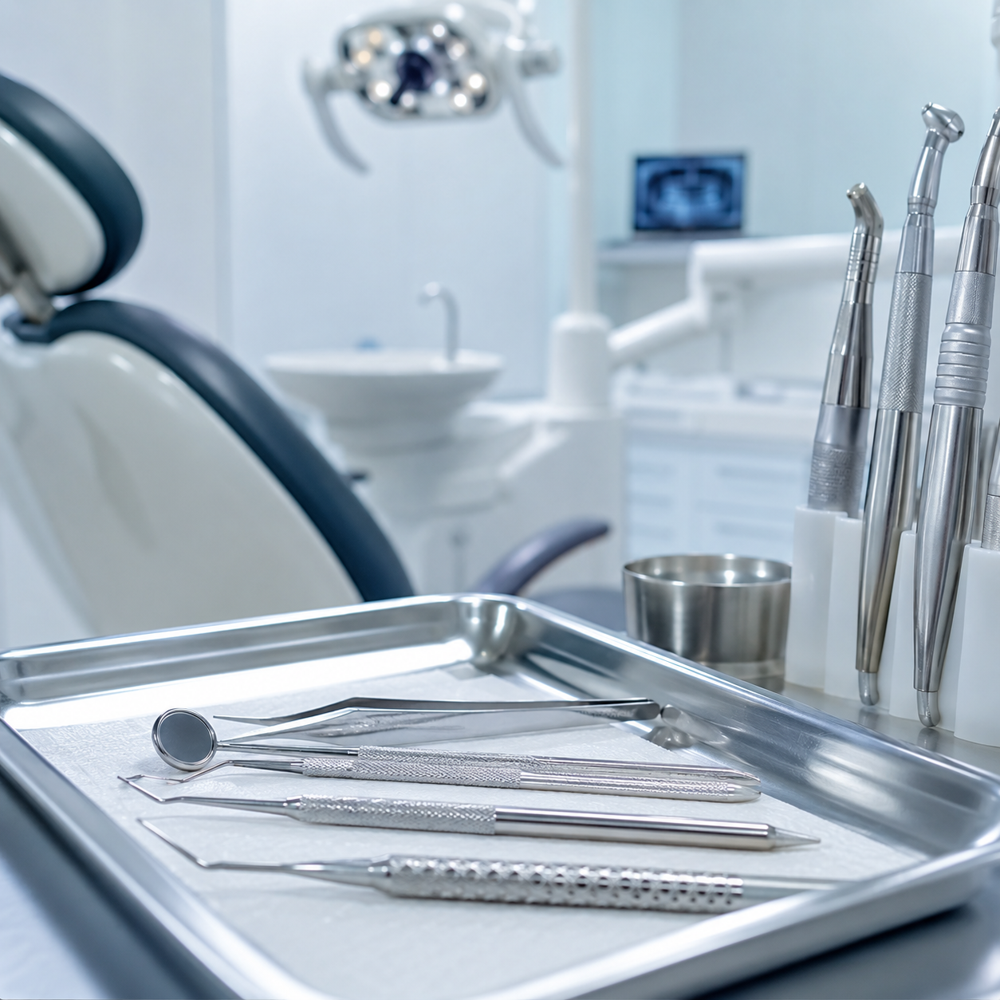
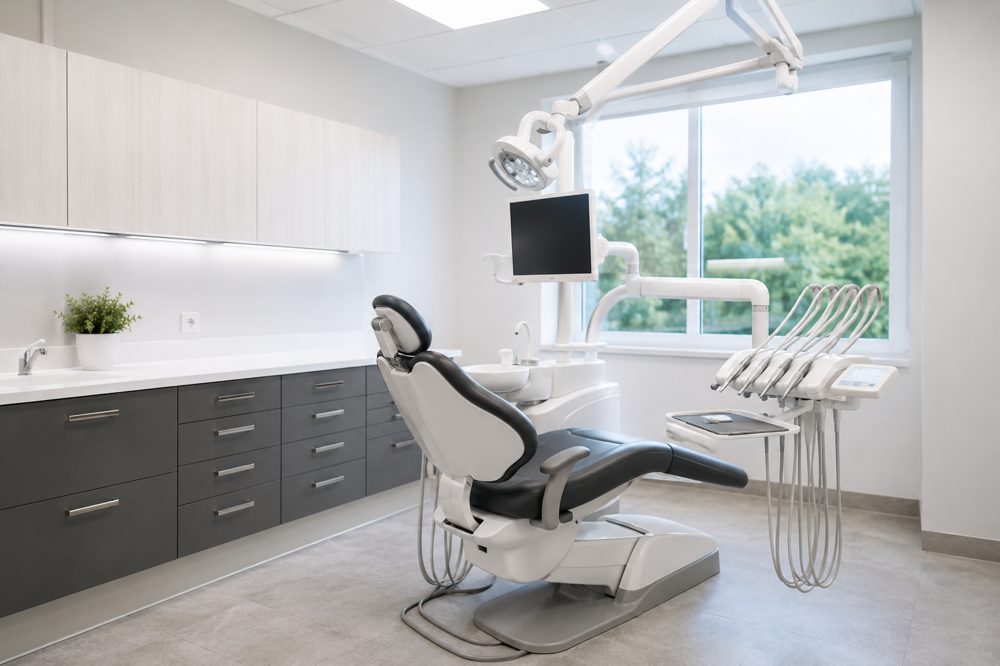

New Patient Visit
Consultation, exam, first questions, and treatment direction.
Request
A premium healthcare landing page with patient trust, treatment clarity, call paths, and a polished appointment request flow.

Clinics lose inquiries when patients cannot understand what to do next. These cards make the path obvious without making the page loud.
Consultation, exam, first questions, and treatment direction.

Cleaning, screening, X-rays, and ongoing maintenance.

Whitening, smile design, and confidence-focused consults.
The page makes patients feel safe, then routes the inquiry to the clinic. It can be connected to email, Google Sheets, or a booking tool if the client provides access.

For clinics, facility photos reduce anxiety. The gallery makes the office feel clean, real, and premium.

Request received. Reception can receive this by email, Sheets, or a scheduling tool.
The page uses clinic photography, soft motion, and clear care paths so visitors feel oriented before they inquire.
Back to portfolio